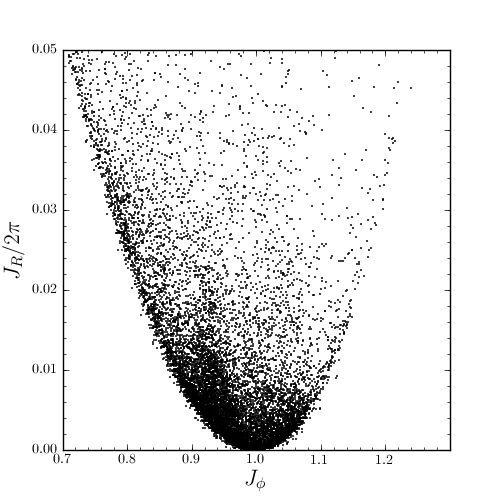

Action-angle coordinates¶
galpy can calculate actions and angles for spherical and axisymmetric potentials. These are implemented in a separate module galpy.actionAngle, but the preferred method for accessing these is as methods of the Orbit class. This Section briefly explains how to do this.
Action-angle coordinates for spherical potentials¶
Actions, angles, and orbital frequencies for spherical potentials can be calculated by first instantiating an Orbit object and then calling the action-angle functions. Since some of the methods assume that orbits are given in re-normalized coordinates, i.e., vc(1)=1, it is prudent to only call these methods with orbits that are initialized in this way. For example, we initialized everything with
>>> from galpy.potential import LogarithmicHaloPotential
>>> lp= LogarithmicHaloPotential(normalize=1.)
>>> from galpy.orbit import Orbit
>>> o= Orbit(vxvv=[1.,0.1,1.1,0.,0.,0.])
and then compute the radial action, specifying the potential to use
>>> o.jr(lp)
array([ 7.22774128e-02, 5.06312577e-11])
The return value is the value for jr, as well as an estimate for the integration error.
Once a call to any of the action-angle methods of Orbit is done, the potential used to evaluate the action-angle coordinates cannot be changed (since various parts of the calculation of these coordinates get cached for re-use). Therefore, we can compute the radial angle then as follows
>>> o.wr()
and the other relevant methods
>>> o.jp() #J_phi = L
>>> o.Tr() #The radial period
>>> o.Tp() #The azimuthal period
>>> o.TrTp() #pi*Tr/Tp
Action-angle coordinates for axisymmetric potentials¶
Action-angle coordinates in the symmetry plane can also be computed for all axisymmetric potentials. Starting where we began for the previous example, we can initialize
>>> o= Orbit(vxvv=[1.,0.1,1.1,0.,0.,0.])
Now we explicitly make this a planar orbit in the symmetry plane
>>> o= o.toPlanar()
and then we can again calculate action-angle coordinates. E.g.,
>>> o.jr(lp)
array([ 7.22774128e-02, 5.06312577e-11])
As expected, this agrees with the value in the example above, since the orbit is entirely in the symmetry plane.
Example: Evidence for a Lindblad resonance in the Solar neighborhood¶
We can use galpy to calculate action-angle coordinates for a set of stars in the Solar neighborhood and look for unexplained features. For this we download the data from the Geneva-Copenhagen Survey (2009A&A...501..941H; data available at viZier). Since the velocities in this catalog are given as U,V, and W, we use the radec and UVW keywords to initialize the orbits from the raw data. For each object ii
>>> o= Orbit(vxvv[ii,:],radec=True,uvw=True,vo=220.,ro=8.)
>>> o= o.toPlanar()
We then calculate the actions and angles for each object in a flat rotation curve potential
>>> lp= LogarithmicHaloPotential(normalize=1.)
>>> myjr[ii]= o.jr(lp)[0]
etc.
Plotting the radial action versus the angular momentum
>>> plot.bovy_plot(myjp,myjr/2./nu.pi,'k,',xlabel=r'$J_{\phi}$',ylabel=r'$J_R/2\pi$',xrange=[0.7,1.3],yrange=[0.,0.05])
shows a feature in the distribution
If instead we use a power-law rotation curve with power-law index 1
>>> pp= PowerSphericalPotential(normalize=1.,alpha=-2.)
>>> myjr[ii]= o.jr(pp)[0]
We find that the distribution is stretched, but the feature remains

Code for this example can be found here. For more information see 2010MNRAS.409..145S.